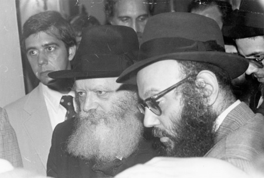
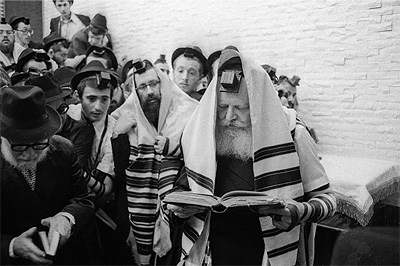

Local but Global
A farbrengen led by Rabbi Leibel Groner on the 19th of Shvat 5772. * The get-together was held with a group of balabatim who came to visit 770 with Rabbi Nechemia Deitsch from Chabad of Midtown Toronto and Rabbi Mendel Bernstein of Chabad Romano-Maple Ontario. Replete with stories, lessons, and insp

AN HOUR OF RELAXATION
The concern that the Rebbe had for the Rebbetzin was moving. When a Chassid reflects on the life that the Rebbe and Rebbetzin shared, he cannot help but be overwhelmed with awe.
Here’s an example of the great concern that the Rebbe and the Rebbetzin Chaya Mushka showed for one another:
They had an understanding between them that during the winter, the Rebbe would go home at around four-thirty or five o’clock in the afternoon, and in the summertime, he would come at seven o’clock. While the Rebbe knew that he had to be home by seven o’clock, if he got tied up due to a certain pressing matter in the office, and it would take him another ten or fifteen minutes before he would come home, he would have one of the secretaries call the Rebbetzin. The secretary would tell her not to worry about the delay because the Rebbe is busy with something in the office, and he’ll be home as soon as he finishes. For her part, the Rebbetzin would always inform the Rebbe about what was happening.
When the Rebbe held yechidus (private audiences) at night for families and other groups, he would start at eight o’clock in the evening, and on a normal night he would continue accepting people until three or four in the morning. In some cases, it lasted until nearly six in the morning. The Rebbetzin would stay up all night until the Rebbe came home. She would always say, “If I won’t be there, he won’t take a cup of tea for himself.”
The Rebbetzin had a non-Jewish cleaning woman who worked for her for about ten years, coming three times a week to take care of the house. A few days after the Rebbetzin passed away, while I was sitting in the Rebbe’s house during the Shiva, this woman sat down in the kitchen and started to cry. I thought that it was quite natural that after working for someone for ten years, she would cry because that person is no longer around. But when she calmed down, and before I had a chance to ask her, she said, “Of course, I’m crying about the Rebbetzin, but I’m mainly crying for the Rebbe.”
When I asked her why, she proceeded to explain: “You saw the Rebbe when he was always under pressure, always working. The only time that you could see that the Rebbe was relaxed and forgot about everything else was when he sat together with the Rebbetzin at the dinner table. Why am I crying? Who is going to give the Rebbe that hour of relaxation?”
“I DON’T UNDERSTAND”
One day, I received a phone call from the Rebbetzin. She told me that she noticed that the Rebbe was in terrible pain. He tried to conceal it from her, but she could tell that he was suffering. She asked the Rebbe to let a doctor come and examine him to determine the cause of the pain, but the Rebbe said that it wasn’t necessary. The Rebbetzin asked me if I would speak to the Rebbe, and then perhaps he would agree to let the doctor come, which he did. The doctor went in, and he told the Rebbe what he thought the problem was, and he wanted to give the Rebbe some medication to relieve the pain.
“I don’t understand you, Doctor,” the Rebbe replied. “If I have pain, this means that the Alm-ghty feels that I need a certain punishment. Who are you to ‘interfere’ in the Alm-ghty’s business?” As a result, he didn’t want to take the medication.
When the doctor came out and told me what had transpired, I told him that it says at the beginning of Parshas Mishpatim, “V’Rapo YeRapeh” (and he shall provide for his cure). Our Sages say that we learn from this pasuk how a doctor has permission to heal a person. While it’s true that if G-d is causing pain to someone there are reasons for this, nevertheless, the Torah says that while G-d gives a certain punishment, the doctor has permission to provide relief for that punishment. I asked the doctor if he would tell the Rebbe that according to the pasuk, he’s allowed to accept the treatment.
Before I finished speaking, the Rebbetzin came in. When I told her what happened, she said, “I don’t understand.” The Rebbetzin went in to the Rebbe, and brought the doctor back into the Rebbe’s room. The doctor wrote a prescription, and we went to the drug store to get the medication. The Rebbetzin had been afraid that even after I would speak to the Rebbe, he still wouldn’t want to see the doctor and follow his advice, so she came to make sure that he would.
MUTUAL CONCERN
Their relationship of concern for one another was unbelievable. Each one always tried to make certain that the other wouldn’t think that something was wrong. They made great efforts to help one another, and they didn’t want the other to worry or to waste valuable time.
There was one occasion when the Rebbetzin had to be in Europe, and the Rebbe asked us to find out what time her flight was due to arrive, because he wanted to go to the airport to meet her. Half an hour before the plane was scheduled to land, the Rebbetzin called. “I’m already at the airport,” she said, “and I’m taking a taxi home because I don’t want to trouble my husband to come and pick me up. Please just tell him that I’m on my way.” I told the Rebbe, and he left the office and went home.
It’s quite interesting how people tend to think that since the Rebbe is such a great tzaddik, he forgets about everything else. Not true. The Rebbe was very concerned…

FOR THE LOVE OF HIS CHASSIDIM
Yet, the Rebbe’s concern was not just about his own family. My wife’s uncle – her mother’s sister’s husband – was Rabbi Yehuda Chitrik, who passed away five years ago at the age of 106. He learned in Lubavitch with the Rebbe Rashab, and then came to America to be together with the Rebbe Rayatz, and then with our Rebbe. About two months after Gimmel Tammuz, he came to my office. He sat down and began to cry like a baby. He cried for five, ten minutes, and I couldn’t stop him. Finally, after about twenty minutes, he managed to calm down.
“Fetter (Uncle),” I asked him, “what are you crying about?”
“Let me tell you something,” he replied. “I was with the Rebbe Rashab, I was with the Rebbe Rayatz, and I was with our Rebbe here. It’s difficult to make a distinction between them, but certain things were so obvious that you could practically touch them. The Rebbe Rashab was more detached from his Chassidim, farbrenging with them only three times a year. He would say a maamer every Friday night … He would farbreng, people used to say L’chaim, [but] only three times a year. His son, the Rayatz, the previous Rebbe, would do it on Yom Tov and on other occasions. However, our Rebbe,” he said, “was not only a Rebbe – he was our father. He took a personal interest in everything that took place in everyone’s private home. He wanted to know exactly what was happening with every child, every individual, what they are doing, and how they are getting along.”
A woman once told me that she had to go into the Rebbe to speak about a certain matter. Just as she was about to come out, the Rebbe asked her, “How is your foot?”
“What foot?” she asked.
The Rebbe replied, “Your husband wrote to me three months ago that you fractured your right foot, so I wanted to know how it is.” The woman told the Rebbe that it healed after three weeks and now everything is all right. “Fine,” the Rebbe said, “but no one informed me.”
“The Rebbe has nothing else to think about for three months,” the woman said. “He has the whole world on his head, but all he is worried about is whether my foot has healed or not.” This shows how the Rebbe was concerned with the details of each and every family.
AMBASSADORS
I can safely say that since Moshe Rabbeinu, I don’t think there has been another leader who has reached out to all Jews throughout the world like the Rebbe did. In all previous generations, there were certain physical limitations, as the systems of communication and technology that we have today and the concept of sending people all over the world still didn’t exist.
A few months ago, we had the convention of our shluchim, over 3,500 in number attending, followed by a women’s convention for the 3,500 shluchos. The Canadian foreign minister recently came to Kfar Chabad, and they wanted me to be there as well. I told him that I thought that Lubavitch was the greatest government in the world. When the minister asked me to explain, I asked him, “Mr. Foreign Minister, how many ambassadors does your country have throughout the world?” He replied that there were a few hundred.
“Do you know how many ambassadors we have?” I asked him. “We have about 3500 ambassadors all over the world.” The minister was overwhelmed to hear about the work of the Rebbe’s shluchim.
FOLLOW INSTRUCTIONS – NO QUESTIONS ASKED
With all that, the Rebbe showed great interest in every individual.
Chassidim like to tell miracle stories from the Rebbe. The reason for this is to demonstrate that the world is on a much higher level than we think. The saying goes, “The closer you look, the better you look.” This is what happens when we hear about something beyond nature running the world. Working in the Rebbe’s office, I had the opportunity to witness many, many different incidents where we saw this type of miracle taking place.
In the first year of the Rebbe’s nesius (1951), a doctor came on Motzaei Shabbos to the office, crying bitterly. When I asked him what the problem was, he replied that his twelve-year old daughter had suddenly become very sick. “My fellow doctors examined her,” he said, “and they told me that she is in very critical condition. I heard that Rabbi Schneersohn gives blessings and advice that help and I would like to see the Rebbe and get a bracha.”
When he came out of the Rebbe’s office, I asked him what had happened. He said that the Rebbe asked him if he put on t’fillin every day, and the doctor replied that unfortunately he did not. The Rebbe then told him that if he would start putting on t’fillin every day, that would be the channel for his daughter’s recovery. When he explained to the Rebbe that he didn’t know how to put on t’fillin, the Rebbe said, “Come tomorrow morning to the yeshiva building, and one of the students will teach you how to do it.” And so he did. He came to the shul the following morning to daven and they showed him how to put on t’fillin.
After doing this for about three or four weeks, I asked him if there was anything that we could tell the Rebbe about his daughter’s condition. “Yes,” the doctor replied. “Please tell the Rebbe that she’s out of danger, and we hope that over the course of time, things will improve and she’ll be able to come home.” This is exactly what happened.
About a year and a half later, the doctor came running into 770 and told me that he needs another bracha from the Rebbe. “What happened?” I asked.
“My daughter became sick again,” the doctor said.
“Doctor, tell me the truth,” I asked him. “Did you stop putting on t’fillin?” He admitted to his mistake.
“You know what,” I told him. “We’ll write a note to the Rebbe, and we’ll tell him what happened, but I won’t mention that I spoke to you about the t’fillin.”
The doctor brought in the note, and the Rebbe immediately asked him if he was still putting on t’fillin. “I told you that the channel for your daughter’s health is your mitzvah of t’fillin,” the Rebbe said. “So why did you stop?” The doctor promised that from then on, he would keep putting on t’fillin.
I met him about two years later. He said that he puts on t’fillin every day, and thank G-d she’s growing up healthy and everything’s fine. Of course, we don’t understand the connection between t’fillin and her health, but the effects are clear as ever.
One day, the Rebbe came into the office, and he heard one of the secretaries speaking to a woman, trying to explain to her that she has to listen to what the Rebbe says. While I was standing in the office, the Rebbe interrupted the secretary and asked to know what was going on. The secretary explained that this woman had called a few weeks earlier requesting a bracha. Her husband had become ill and the doctors were unable to help him recover, and the Rebbe told her that she has to start lighting candles every Erev Shabbos. However, the woman didn’t see the connection between her lighting Shabbos candles and her husband getting well.
The Rebbe told the secretary: “Ask this woman, ‘Why did you come to me?’ She knows that I’m not a doctor, and I assume that she knows that I never studied medicine. Nevertheless, I think she came to me because she believes that Hashem gave me an ability to advise and to bless. What difference does it make whether she understands the connection or not? I’m telling her again, if she starts lighting candles…”
She called me six weeks later to tell me that, thank G-d, her husband was back home already, fully recovered, and she wanted the Rebbe to know that she will continue lighting Shabbos candles.
We don’t understand the connection, but the Rebbe sees the connection.
WHICH EXPERT?
Let me tell you another story about the Rebbe that I heard from the Rebbetzin:
The Rebbe has some relatives living in Borough Park by the name of Rokeach. Whenever they had a question for the Rebbe, they would not send it through the secretaries’ office. They would call the Rebbetzin, and she in turn would ask the Rebbe and then give them the Rebbe’s answer. Once, I jokingly told her that we would have to put her on the payroll for doing secretarial work for her husband.
One day, she received a phone call that the mother of this family, whom I knew very well, had suddenly become ill. After a series of tests, the doctors came to the conclusion that she needed an operation. Naturally, her family wouldn’t do anything without the Rebbe’s approval. So they asked the Rebbetzin to report to the Rebbe what the doctors had said and ask what they should do regarding the operation. The Rebbetzin said that when she told the Rebbe the whole story, the Rebbe said that under no circumstances should she have an operation. The family immediately contacted the doctors and told them they would not give their consent.
The doctors couldn’t believe it. “What will you do now?” they asked.
“We hope that things will get better,” the family members replied.
A week later, a family member called the Rebbetzin and told her that ever since they had refused to do the operation, the mother’s health had seriously deteriorated, to the point that the doctors said that she was in very critical condition. As a result, the family now felt that the operation was absolutely necessary, and they wanted the Rebbetzin to ask the Rebbe again. The Rebbetzin replied that while Chassidim don’t ask the Rebbe twice, she would mention it to the Rebbe. When the Rebbe came home for dinner, he inquired about the situation with this woman’s health. When the Rebbetzin told the Rebbe about her condition, the Rebbe responded to her in the strongest and most serious tone she had ever heard. The Rebbe gave a bang on the table and said very loudly, “I said once not to operate, and I’m saying now a second time not to operate!” The Rebbe was most adamant in his opposition to any surgery.
The woman’s condition became even more serious and the family didn’t know what to do. A few days later, when the Rebbe asked again about the situation, he said, “Why don’t they try to cure her through medication?” Seeing a possible sign of light at the end of the tunnel, the family went to speak to the doctors. Ridiculing the Rebbe’s lack of medical knowledge, the doctors rejected this suggestion, convinced that surgery was the only option.
The family went around to the other departments in the hospital until they found a doctor who was prepared to listen. “I think I know what the Rebbe means,” this doctor said. “I have my ‘passport’ – my white apron – which allows me to go into any room, even though the person requiring treatment is not my patient. When no one else is in the room, I will inject her with this medication to which I assume the Rebbe is referring.” And so he did.
Two days later, the family met with this doctor and he asked for a medical update. They said that the doctors couldn’t explain it, but the woman’s condition had stabilized. “If that’s the case,” the doctor said, “I’ll give her another dose.” He gave her two or three more injections of this medication, and after two weeks, the doctors said that she was out of danger. Finally, after about a month had passed, she had completely recovered and was sent home from the hospital.
Naturally, the family called the Rebbetzin to ask her to give the Rebbe the good news. The Rebbetzin then told me what the Rebbe had said:
“Now I can tell you what happened,” the Rebbe told the Rebbetzin. “When they asked me the first time about the operation, I saw that if, G-d forbid, they would do the surgery, the woman would not get out of the operating room alive. This is the reason I was so adamantly opposed to it. When they asked me a second time, I saw the same thing. This shows that you can have experts in a certain field saying one thing, while others contradict them and say something else entirely. To whom are you supposed to listen?”
A SHLIACH OR NOT?
One year, just a few days before Pesach, I called a shliach somewhere in Europe with a message from the Rebbe, instructing him to visit a certain city and give assistance to a Jewish resident there. The Rebbe did not specify who this Jew was or what type of help he was supposed to provide.
“R’ Leibel,” the shliach said. “It’s two or three days before Pesach. I’m expecting four hundred people for the Seder. How can I drop everything and travel four hours to this city and four hours back?”
“Listen,” I told him, “are you a shliach of the Rebbe or not? The Rebbe knows that it’s right before Pesach. Drop everything and go immediately to that city. Don’t waste any time.”
The shliach called me after Pesach: “Let me tell you what happened. I came to that city, but there were only Gentiles there. There wasn’t a single Jew – no shul, no nothing. I went around asking the local residents if there were any Jews in the city. No one knew of any Jews living there. I went to the city hall and asked to check the lists of people who live in the city, but there were no records of any Jews in town. I thought that maybe I had made a mistake (there were no cell phones in those days), and so I prepared to head back home and I would call you to say what happened.
“Before leaving the city, I stopped at a gas station. The attendant came out and asked me, ‘What’s a Jew with a beard doing in a city where there are no Jewish people? What are you doing here?’
“‘Are you sure that there’s not even one Jew in this town?’ I asked the man. The attendant thought for a moment and then said, ‘Now that you mention it, there’s a butcher shop about half an hour away from here, and I’m almost sure that the owner of that butcher shop is a Jew.’ He gave me the directions, and I arrived there at around a quarter to six in the evening.
“I opened the door of the butcher shop, and when the owner saw me, he fell down on the floor and fainted. I got scared. What had I done to him? I picked him up, revived him, brought him to a chair, and gave him a cup of cold water. When I asked him what had caused such a strong reaction, he told me the following:
“‘My wife, my two children, and I are the only Jewish people in this city. The local priest comes from time to time and tries to convince us to convert to their religion. “Why does your family have to be alone,” he says. I always told him that Jews allowed themselves to be sacrificed, burnt in auto de fés…’”
The shliach said that he told this young man, “Since Pesach is in another two or three days, I’m inviting you, your wife, and your two children to spend the holiday with us.” The man happily agreed.
Two years later, this shliach called me again. “I have to tell you what happened afterwards. While they were staying with us, we asked them to stay a little while longer. We explained to them what it means to be a Jew and taught them about the mitzvos they have to observe. Their stay lasted for about six weeks.
“Last week, I was visiting Yerushalayim and I went to daven at the Western Wall. Suddenly, I felt someone tapping my shoulder. I turned around and saw a bearded young man standing with his children. They looked like fine chassidic Jews from top to bottom – yarmulke, peios, tzitzis…
“’Do you recognize me?’ he said. When I said no, he replied, ‘Look into my eyes.’ I took a closer look at him. ‘You’re the butcher from that town!’ I cried. ‘What happened? What are you doing here?’
“’When we returned home after spending those six weeks in your home,’ he replied, ‘my wife told me, “Listen, if we’re Jewish and we have to live where other Jews are, then what are we doing here? We have to close the shop, pack our things, and make aliya to go live in Eretz Yisroel.” That’s exactly what we did. Since arriving here, we have become closer and closer to our Judaism and you can see for yourself how we’ve progressed…’”
You can see from this how the Rebbe’s foresight led to this family becoming observant for generations to come. The Rebbe is sitting in Brooklyn, and he sees a family in need somewhere else in the world. Therefore, to save them from, G-d forbid, doing something disastrous, the Rebbe immediately makes certain that someone who can help them goes out there and takes care of the matter.
BOX 1
AN ANSWER FOR THE NESHAMA
The Rebbe Maharash was once asked by one of his Chassidim: “How is it that several people can ask the same question, yet each person gets a different answer?” The Rebbe replied: “What kind of Rebbe would I be if I only had one answer for every question?”
I have a handwritten note from the Rebbe, where he writes that when he gives an answer to a certain individual, it doesn’t necessarily mean that someone else is meant to learn something from that answer. Why? Because when someone asks a question, you have to consider the type of person he is, where he comes from, the nature of the question, and many other circumstances. All this serves as the basis for the specific answer.
But there’s an aspect to this that’s on an even higher level. Here’s a story to illustrate this point:
There was a Gerer Chassid who, back in the fifties, dressed in modern attire and was involved in various business ventures. While he was a member of the Gerer community, he still went around wearing a white hat and a short jacket.
One day, he came to the apartment building at 346 New York Avenue, on the corner of President Street. He entered the vestibule and waited for the elevator. Suddenly, a young man with a black beard came in and also stood waiting for the elevator. He said “Shalom Aleichem” to the Gerer businessman, and then asked who he was. When the man gave his name, the young man asked him what he did for a living. After explaining the nature of his business, the young man asked if his business periodically required him to travel to foreign countries to sell his merchandise.
The businessman said yes, and the young man asked where he had been traveling recently. “Nicaragua,” the Gerer Chassid replied.
“Is there a mikveh there?” the young gentleman inquired, and the businessman said that there wasn’t.
“Perhaps the reason why you go there to visit is in order to build a mikveh for women and for Jewish tourists,” the young man said.
Many years passed, and while the businessman continued his line of work, he eventually became much closer to the Gerer chassidim, and he began dressing in accordance with Gerer chassidic customs – long jacket, shtraimel, peios, a beard, etc. Once during a business trip to New York, he heard that the Lubavitcher Rebbe gave out dollars on Sunday afternoon, and he decided to go and ask for a blessing.
As he approached the Rebbe, the Rebbe asked him, “Is there already a mikveh in Nicaragua?” At first, the Gerer Chassid didn’t understand. “Don’t you remember?” the Rebbe clarified. “A number of years ago, we met at the elevator and I asked you about the mikveh…”
When the Gerer Chassid returned to Eretz Yisroel, he went in to speak with the previous Gerer Rebbe. The Chassid asked: “How is it that although I look different now than I did back then – wearing chassidic garb now as opposed to the modern clothes I wore at the time – yet when the Rebbe saw me, he immediately knew who I was?”
“When a Rebbe looks at someone, he looks at his neshama – not at his physical body,” the Gerer Rebbe replied. “Your neshama is the same now as it was then. Therefore, when you approached the Lubavitcher Rebbe, he saw that this is the same person with whom he spoke a number of years ago.”
In other words, when the Rebbe gives an answer, he answers according to the neshama, not only according to the physical body. Since every soul is different, each one has different ways to receive G-d’s blessings from Above.
BOX 2
A REAL REBBE
[One of the participants identified herself as a relative of Rabbi Efraim Eliezer a”h Yolles, Av Beis Din in Philadelphia, and she asked Rabbi Groner if he could tell something about his relationship with the Rebbe.]
I knew him very well and I was very close to him. He was a Chassid of the Previous Rebbe, and he once told me about how he became a Chassid. He used to come to visit the Rebbe Rayatz, but he didn’t feel that he was his Rebbe. Once when he was standing near the Rebbe Rayatz, he felt something intensely spiritual. He jumped up from his seat, put on his gartel, and said, “Rebbe, I’m becoming your Chassid.” He asked the Rebbe to give him a pencil and a piece of paper to write his name and his mother’s name for the purpose of receiving a bracha.
From that moment on, he became very close to the Rebbe Rayatz. He used to call him ‘Der Heileger Rebbe’ (the holy Rebbe). After the Rebbe Rayatz’s histalkus, he became a Chassid of our Rebbe. He would come to almost every weekday farbrengen and sit very close to the Rebbe’s place. In addition, he would also come to the Rebbe twice a year – during Chol HaMoed Sukkos and Chol HaMoed Pesach. Whenever he came, he would have a private yechidus with the Rebbe. The Rebbe would speak to him about himself in a way that he did with no one else. On many occasions, Rabbi Yolles would confidentially tell me certain amazing things that the Rebbe told him about himself.
He also used to go and see the Satmar Rebbe, who would always chide him regarding his constant travels to Lubavitch. Rabbi Yolles used to tell him, “If you want to see a real Rebbe, come to Lubavitch.”
Due to his very close relationship with the Rebbe Rayatz and our Rebbe, there were many opportunities to help other people through him. During the Second World War, Rabbi Yolles a”h had very strong connections with high-ranking officials in the War Department in Washington. The Rebbe Rayatz and the Rebbe utilized that connection to help Jewish soldiers all over the world, for example, to make sure that they would have matzos for Pesach. Rabbi Yolles would speak with his contacts, give them a list of locations where Jewish soldiers were serving, and the department would provide for their religious needs. He was also involved in helping to get Jews out of Europe to save them from the Holocaust, and he was quite happy to use these connections to help the Rebbe Rayatz in this respect.
Rabbi Yolles would use the expression “Kodshei Kodshim” (holy of holies) in reference to the Rebbe Rayatz. He would write the standard title “K’vod K’dushas Admur Shlita,” and then add the words “Kodshei Kodshim.”
BOX 3
BEHIND THE SCENES
[Rabbi Groner was asked to recall incidents when prominent political figures from the United States and Israel would call 770 and ask to speak with the Rebbe.]
We would get calls on Sunday from Eretz Yisroel. Once there was a case of a difficult problem in the Israeli government regarding a certain project. The question was: Who was supposed to provide the financial and budgetary support for the project? The Ministry of Housing said that this office was in charge, while another ministry gave a different answer. After a few weeks of discussion, no one could come to a final decision, and the prime minister said that the only one who could help was the Rebbe. Government officials came to 770, presented us with the problem, and asked for the Rebbe’s advice.
One of the officials came in to the Rebbe, told him what the question was, and the first thing the Rebbe did was to give him a big smile and say to him, “For such a simple matter you had to come overseas?” The man felt like an infant. The Rebbe analyzed the whole situation and then said, “This part of the project belongs to this office, and this part of the project belongs to that office. What’s the big deal?” The official was about to leave when the Rebbe asked him to stay.
“There are two ministers in the Cabinet who are having misunderstandings between them,” the Rebbe said. “This can have negative effects upon the decisions of the government.” The man looked at the Rebbe, uncertain as to what the Rebbe meant. The Rebbe then proceeded to give the names of these two government ministers. The official said that he knows who they are, but he had no idea that there was some misunderstanding between them. The Rebbe asked that when he returns to Eretz Yisroel, he should call them, let them know about his meeting with the Rebbe, and tell them that the Rebbe has some advice on how to settle their problem amicably.
The official was absolutely amazed. He told me that neither of these ministers had any connection to the Rebbe, and he didn’t believe that anyone had written to the Rebbe on the matter. “The Rebbe sits here in Brooklyn,” he said, “yet he knows everything happening to us behind the scenes.”
BOX 4:
“HOW DID THE REBBE KNOW?”
Arik Sharon came to the Rebbe on numerous occasions. When his wife Lily was alive, he always came with her. Once he called me and said that he wanted to see the Rebbe about a personal non-government related matter, and since his elderly mother (she was about eighty-five years old at the time) was accompanying him, he wanted to know if she could come as well. “Of course,” I said.
“What time should I come?” he asked.
“Try to be here at midnight,” I replied. The reason for this was that I wanted the people who needed far less time to get in for yechidus first. Mr. Sharon could then sit with the Rebbe for an hour or two, because any other people who came afterwards would have to wait.
He came at around eleven-thirty, a quarter to twelve, and we sat and chatted until around twelve o’clock. His mother went in with him and spent about ten minutes with the Rebbe. Before she went in, she asked her son, “Arik, tell me how long you expect to be with the Rebbe?”
Sharon replied: “Maybe fifteen or twenty minutes. That’s all I need.”
The mother came out, and Sharon and his wife remained with the Rebbe. Half an hour passes, an hour, an hour and a half. Finally, he came out. “Arik,” his mother said, “you call that twenty minutes?”
“Don’t blame me,” he said. “It was the Rebbe.”
Lily Sharon then called me over and said that she had to speak with me. “You know that we are not chassidic people,” she said. “However, we have heard many times how Chassidim say that the Rebbe has ruach ha’kodesh – he sees and knows what’s happening anywhere in the world.
“I must tell you what happened tonight. We came regarding a personal problem with one of our children. Thank G-d, the Rebbe gave us some very good advice. That took about fifteen or twenty minutes. We were about to leave when the Rebbe asked us to stay. ‘I want to speak to you about something,’ the Rebbe said. ‘I know that you’re having a misunderstanding with one of your colleagues in the Cabinet, and I would like to help you.’”
Mrs. Sharon took out a white handkerchief to dab her eyes. “You know that Arik is not the type to get frightened easily. He became very pale and started to sweat. We looked at one another. How did the Rebbe know that such a thing was happening? No one wrote to the Rebbe about this – not me, not Arik, not anyone in the government. ‘Are you ready to listen?’ the Rebbe asked. Sharon said ‘yes.’
“‘First, I’ll tell you what the problem is,’ the Rebbe began. For fifteen minutes, the Rebbe laid out the nature of the dispute. ‘Is this correct?’ the Rebbe asked. ‘Yes,’ Sharon replied. ‘Now, I’m ready to give you advice,’ the Rebbe continued. This took up another half an hour.
“How did the Rebbe know?” Lily Sharon asked. “Now we can believe what Chassidim say about the Rebbe having ruach ha’kodesh.”
A year later, Sharon was invited to speak in Kfar Chabad. One of the Chassidim said to him, “Arik, please tell the crowd about the ruach ha’kodesh you experienced from the Rebbe.” Sharon didn’t understand. “What ruach ha’kodesh? I never saw ruach ha’kodesh from the Rebbe.”
“You know what?” the Chassid said. “Call up your wife Lily. Don’t tell her that I said anything. Just say that people are asking you to talk about the Rebbe’s ruach ha’kodesh.”
While at this large gathering, he went out and picked up the phone to speak to his wife. “Arik,” she said, “don’t you remember?” and he suddenly recalled this particular incident in 770. He went back out and told the whole crowd what the Rebbe had told him, including how without anyone writing to the Rebbe about the problem, the Rebbe knew what it was and even provided the answer.
Regarding other political candidates, I remember when Averell Harriman [then Governor of New York, 1955-58] came to the Rebbe when he was running for president [in 1956]. Robert Kennedy came to get a blessing for his brother, John F. Kennedy. I made the appointment.
Rabbi Leibel Groner. "Local but Global." Beis Moshiach, no. 829 (March 28, 2012).